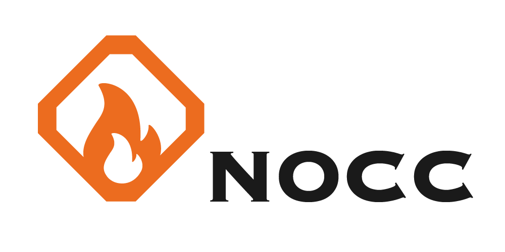
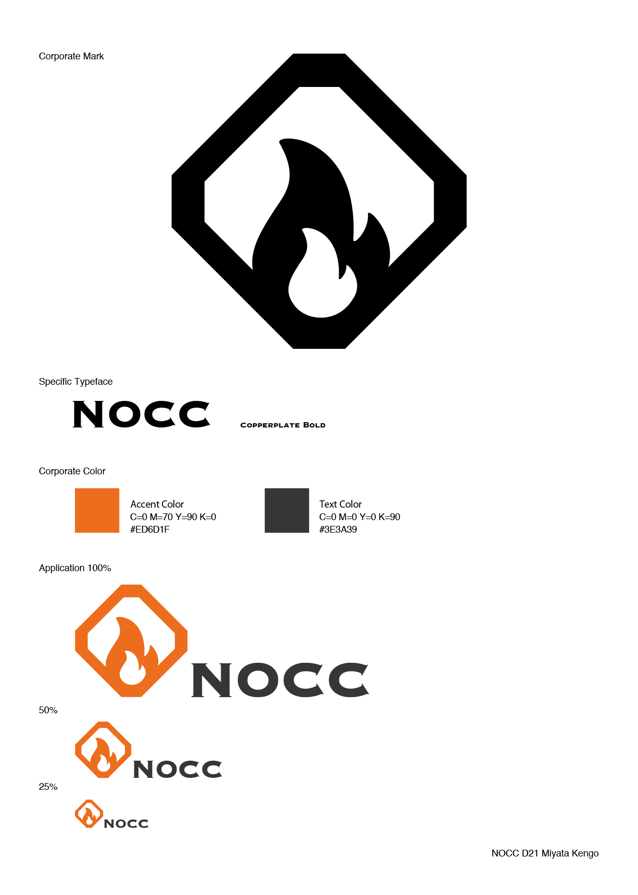
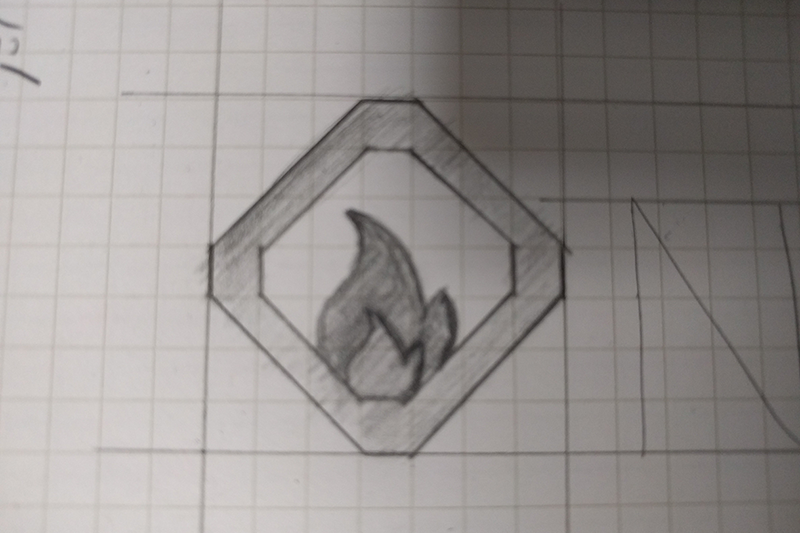
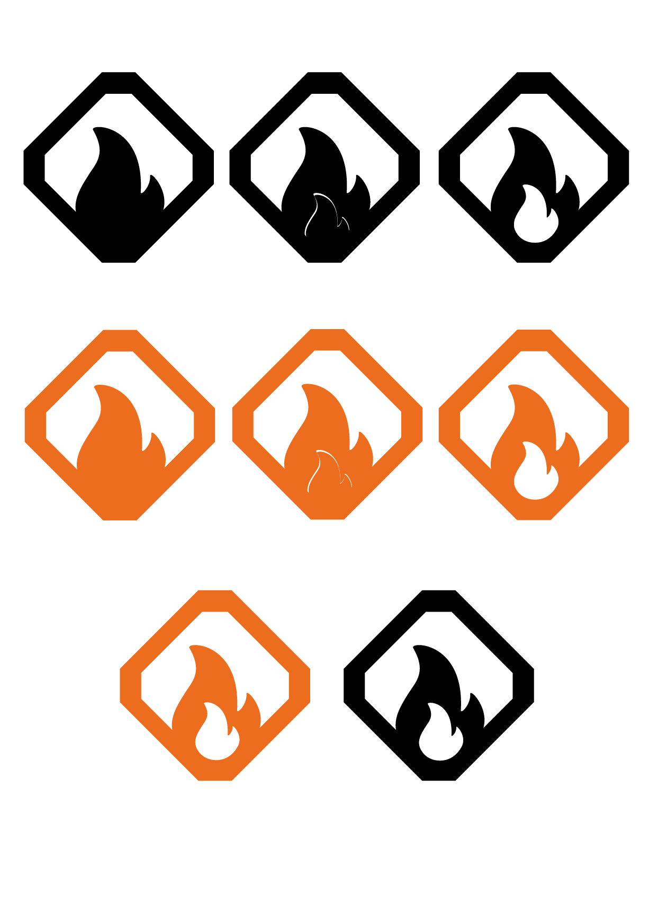

３期 課題発見 授業課題
NOCC ロゴ案
 Visual Identity
課題発見という架空の会社を作る授業で自社のロゴ案及びVIを制作しました。Visual Identityとは自社のロゴ、使用フォント、ブランドカラーなどの会社の個性のことです。会社のブランディングデザインと解釈しています。ロゴは小さくても見やすく分かりやすいアイコニックな形を意識しました。会社コンセプトがヒーローなので炎をイメージしています。炎の周りの枠は「なんとなくかっこいいから」という理由で作ってしまい、メッセージ性を持たせられなかったのが失敗した点です。
制作過程


制作ソフト Adobe Illustrator
製作期間 １週間
関連する作品